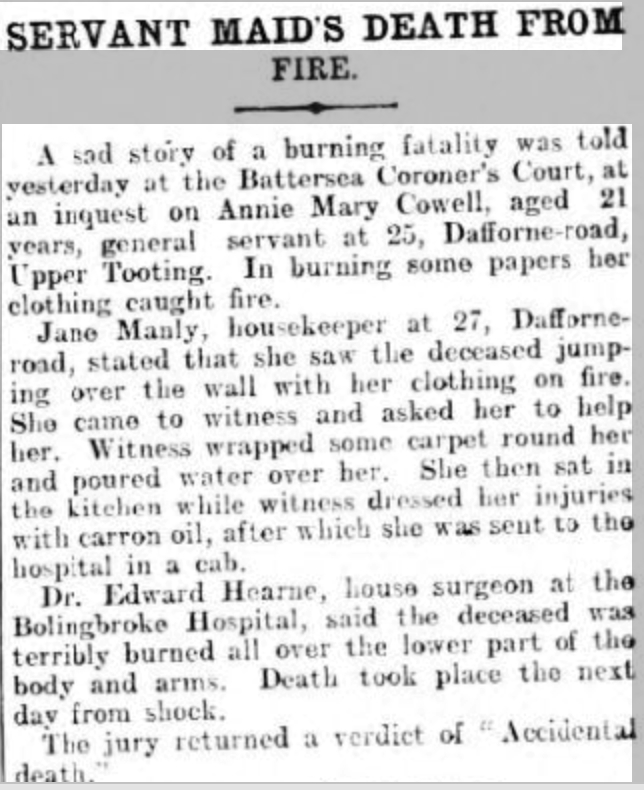
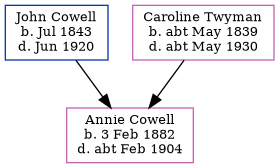

Annie Mary Cowell 1882 - c1904
[ Home ] | [ Calendar ] | [ Surnames Index ] | [ Census Index ] | [ Family History ]The child of John Cowell (a laborer) and Caroline Twyman, Annie Cowell, the first cousin three-times-removed on the mother's side of Nigel Horne, was born in East Malling, Kent, England on Feb 3, 18821,2,3,4 and baptized there on Feb 22, 1882. On Apr 5, 1891, she was living on Lunsford Lane in East Malling6.
She died c. Feb 1904 on Bolingbroke Hospital, Wakehurst Road, Wandsworth Common, London, England5.
Parents
- John was born in Jul 1843
- Caroline was born c. May 1839
Citations
- 1891 England Census Online publication - Provo, UT, USA: The Generations Network, Inc., 2005.Original data - Census Returns of England and Wales, 1891. Kew, Surrey, England: The National Archives of the UK (TNA): Public Record Office (PRO), 1891. Data imaged from The National
- England & Wales Christening Records, 1530-1906 Online publication - Provo, UT, USA: Ancestry.com Operations Inc, 2008.Original data - Genealogical Society of Utah. British Isles Vital Records Index, 2nd Edition. Salt Lake City, Utah: Intellectual Reserve, copyright 2002. Used by permission.Original dat
- England & Wales, FreeBMD Birth Index, 1837-1915 Online publication - Provo, UT, USA: The Generations Network, Inc., 2006.Original data - General Register Office. England and Wales Civil Registration Indexes. London, England: General Register Office. © Crown copyright. Published by permission of the Cont
- England Births & Baptisms 1538-1975 - Findmypast
- England & Wales deaths 1837-2007 - Findmypast
- 1891 England, Wales & Scotland Census - Findmypast (was age 9 and the sister of the head of the household)
Media
London Daily News 5-1-1904 Annie Mary Cowell

1901 England, Wales & Scotland Census Transcription - GBC-1901-0007983644
England & Wales births 1837-2006 Transcription - BMD-B-1882-1-AZ-000127-266
Kent Baptisms Transcription - GBPRS-B-82129387-1
England & Wales deaths 1837-2007 Transcription - BMD-D-1904-1-AZ-000089-008
England Births & Baptisms 1538-1975 - R_870994682
1891 England, Wales & Scotland Census - GBC/1891/0005472926
England Births & Baptisms 1538-1975 - R_885447443
Family Tree
Generated by ged2site. Last updated on Jun 11, 2024